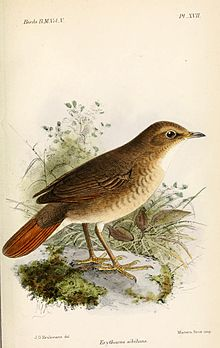
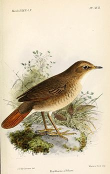

| Rufous-tailed Robin | |
|---|---|
|  | |
| Illustration by Keulemans, 1881 | |
| Conservation status | |
| Binomial name | |
| Luscinia sibilans (Swinhoe, 1863) |
|
| Synonyms | |
|
| Rufous-tailed Robin | |
|---|---|
|  | |
| Illustration by Keulemans, 1881 | |
| Conservation status | |
| Binomial name | |
| Luscinia sibilans (Swinhoe, 1863) |
|
| Synonyms | |
|
The Rufous-tailed Robin Luscinia sibilans, also known as Swinhoe's Robin, Swinhoe's Nightingale or Whistling Nightingale, is a small passerine bird that was formerly classed as a member of the thrush family Turdidae, but is now more generally considered to be an Old World flycatcher, Muscicapidae. It, and similar small Old World species, are often called chats.
It is a migratory insectivorous species breeding in forests in the taiga of northeastern Asia and south to Mongolia, and wintering in Southeast Asia and southern China. The first record in Europe was on Fair Isle, Scotland in October 2004. Another was in Poland in January 2006.
The nest is in a tree and 3-6 eggs are laid.
The Rufous-tailed Robin is smaller than European Robin at 14 cm length. It is plain grey brown above and grey to white below, with a heavily mottled breast. It has a bright rufous tail. At first glance it is confusable with the American Catharus thrushes such as Veery and Hermit Thrush.
It is a bird of undergrowth in coniferous woodlands, terrestrial in its habits and insectivorous. It often flicks its tail.
The call of the Rufous-tailed Robin is a chirp or chirrup like an insect or a shrew.

{kind=link}